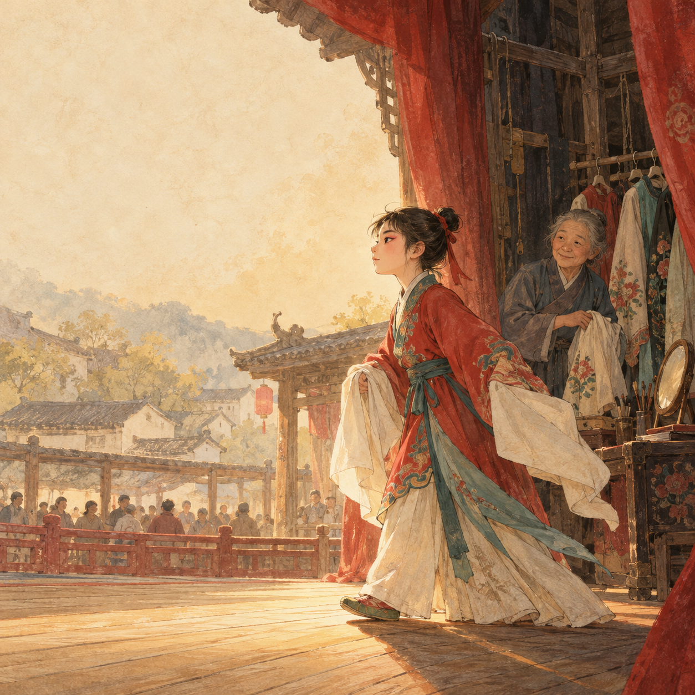
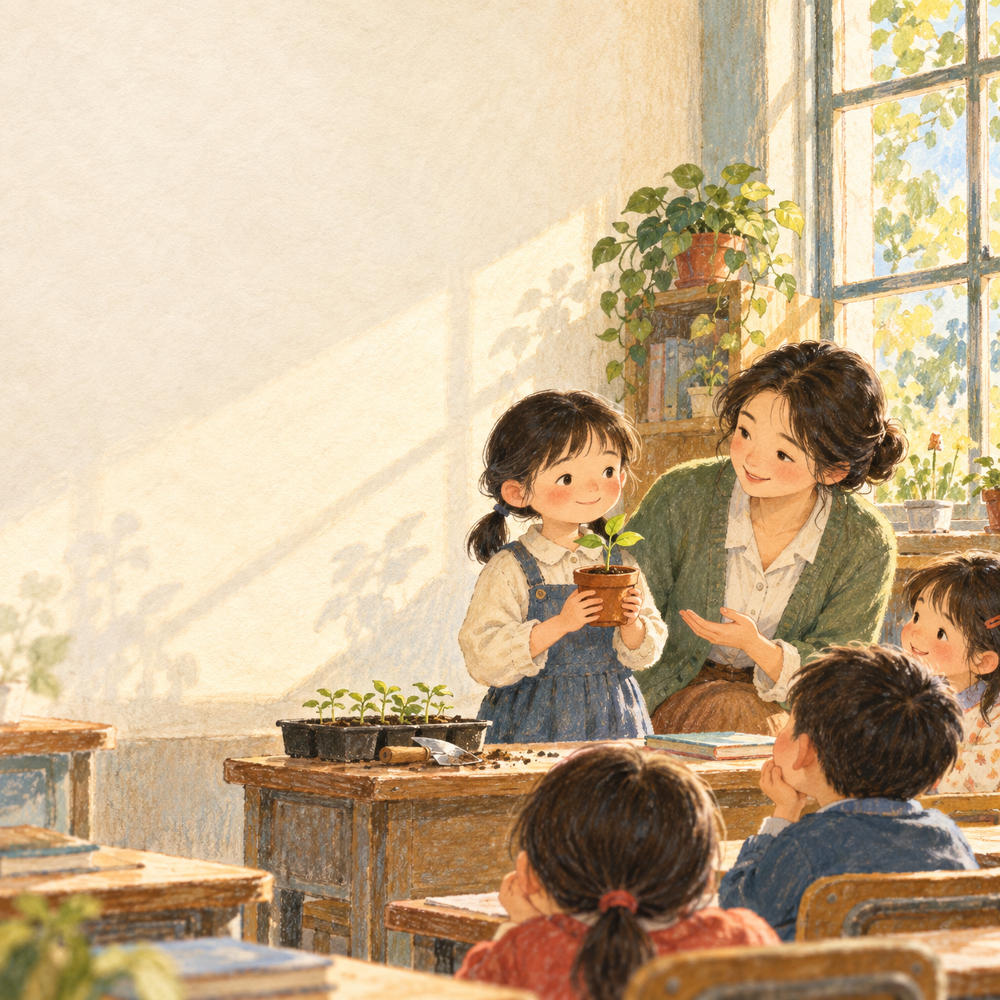
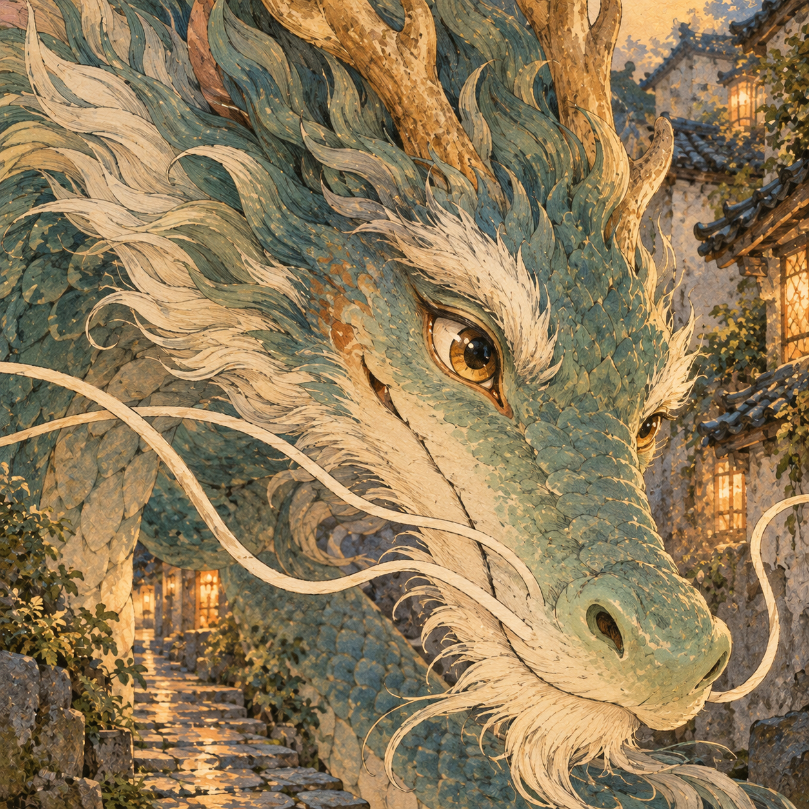
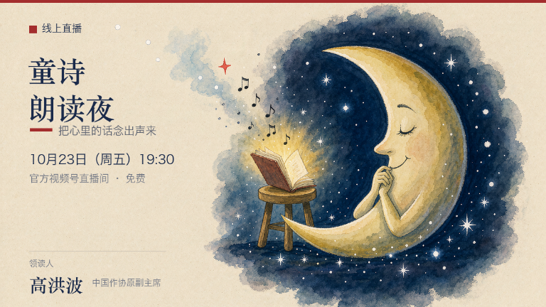

9月15日
与领读人共读好书，发现值得读的杂志、文章和声音，让阅读成为日常。
领读语如果你是故事中的主人公，会做出怎样的选择？
2026-09-07 至 2026-10-04

9月15日

9月15日

9月15日
国际安徒生奖得主曹文轩携“油麻地”系列经典而来，一场关于成长、苦难与美的领读课。副主编冷林蔚主持导读，现场共读《草房子》选段，并设小读者提问与签书环节。适读 8–15 岁学生及家长、语文教师。
